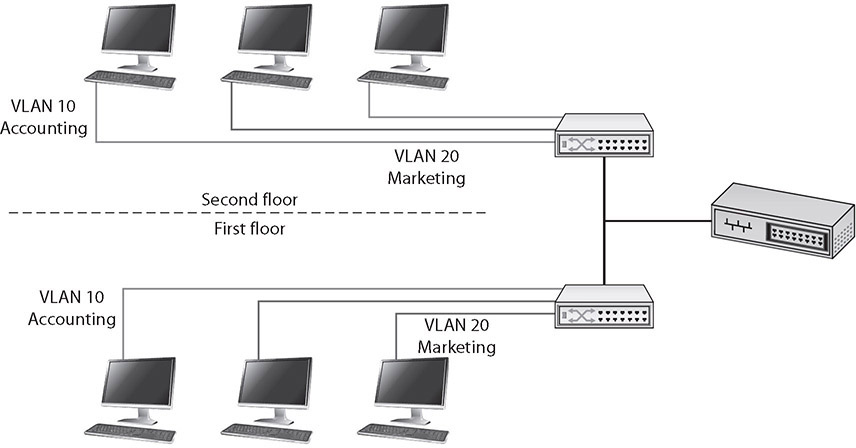
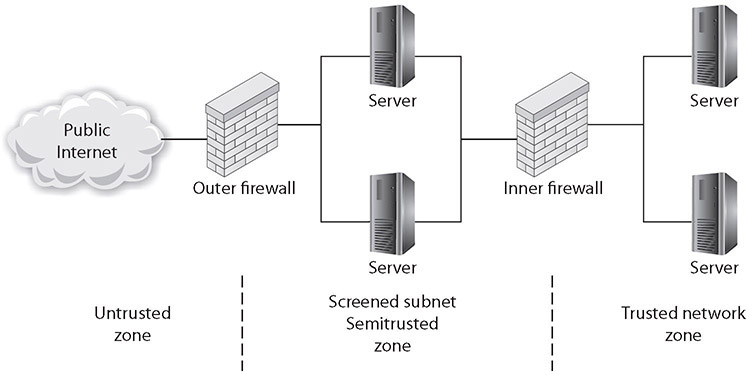
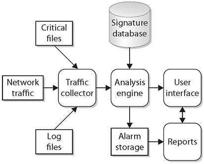
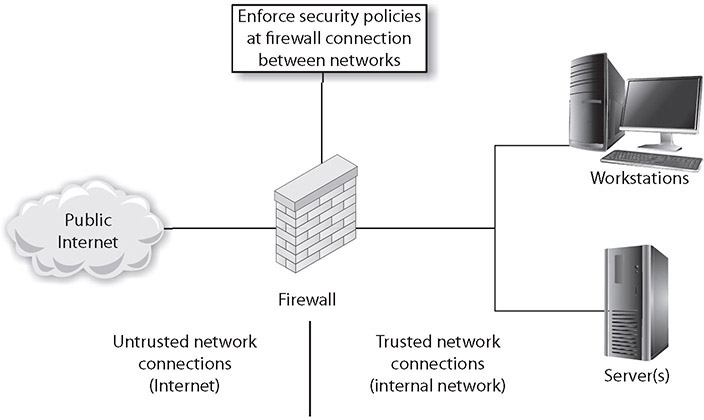
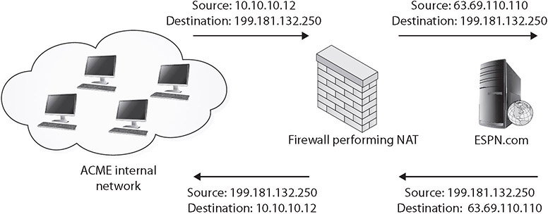

Table of Contents for
CompTIA Security+ All-in-One Exam Guide, Sixth Edition (Exam SY0-601)), 6th Edition
- Cover (01:09 mins)
- Title Page (01:09 mins)
- Copyright Page (03:27 mins)
- Dedication (01:09 mins)
- About the Authors (04:36 mins)
- Contents (19:33 mins)
- Preface (02:18 mins)
- Acknowledgments (01:09 mins)
- Introduction (12:39 mins)
-
Part I Threats, Attacks, and Vulnerabilities (01:09 mins)
- Chapter 1 Social Engineering Techniques (35:39 mins)
- Chapter 2 Type of Attack Indicators (37:57 mins)
- Chapter 3 Application Attack Indicators (33:21 mins)
- Chapter 4 Network Attack Indicators (39:06 mins)
- Chapter 5 Threat Actors, Vectors, and Intelligence Sources (44:51 mins)
- Chapter 6 Vulnerabilities (31:03 mins)
- Chapter 7 Security Assessments (23:00 mins)
- Chapter 8 Penetration Testing (25:18 mins)
-
Part II Architecture and Design (01:09 mins)
- Chapter 9 Enterprise Security Architecture (26:27 mins)
- Chapter 10 Virtualization and Cloud Security (25:18 mins)
- Chapter 11 Secure Application Development, Deployment, and Automation Concepts (27:36 mins)
- Chapter 12 Authentication and Authorization (33:21 mins)
- Chapter 13 Cybersecurity Resilience (39:06 mins)
- Chapter 14 Embedded and Specialized Systems (41:24 mins)
- Chapter 15 Physical Security Controls (49:27 mins)
- Chapter 16 Cryptographic Concepts (42:33 mins)
-
Part III Implementation (01:09 mins)
- Chapter 17 Secure Protocols (20:42 mins)
- Chapter 18 Host and Application Security (46:00 mins)
- Chapter 19 Secure Network Design (67:51 mins)
- Chapter 20 Wireless Security (25:18 mins)
- Chapter 21 Secure Mobile Solutions (43:42 mins)
- Chapter 22 Implementing Cloud Security (24:09 mins)
- Chapter 23 Identity and Account Management Controls (33:21 mins)
- Chapter 24 Implement Authentication and Authorization (37:57 mins)
- Chapter 25 Public Key Infrastructure (55:12 mins)
- Part IV Operations and Incident Response (01:09 mins)
- Part V Governance, Risk, and Compliance (01:09 mins)
- Part VI Appendixes and Glossary (01:09 mins)
- Glossary (65:33 mins)
- Index (67:51 mins)
CHAPTER 19
Secure Network Design
In this chapter, you will
• Learn the essential elements of secure network design
• Explore the various devices used to secure a network
Networks connect the components of an enterprise IT system, carrying signals and data and enabling the IT system to function in the desired manner for the business. Having minimal risk come from the network is important, and the methods to achieve this are through secure network system design. This chapter explores the Security+ elements of secure network design.
Certification Objective This chapter covers CompTIA Security+ exam objective 3.3: Given a scenario, implement secure network designs.

EXAM TIP Preparing for scenario-based questions requires more than simply learning the terms associated with network-based security solutions such as routers, switches, proxies, and load balancers. You should be familiar with how and when to configure each device based on a given scenario.
Load Balancing
Certain systems, such as servers, are more critical to business operations and should therefore be the object of fault-tolerance measures. A common technique that is used in fault tolerance is load balancing through the use of a load balancer. Load balancing involves the use of devices that move loads across a set of resources in an effort not to overload individual servers. This technique is designed to distribute the processing load over two or more systems. It is used to help improve resource utilization and throughput but also has the added advantage of increasing the fault tolerance of the overall system since a critical process may be split across several systems. Should any one system fail, the others can pick up the processing it was handling. While there may be an impact to overall throughput, the operation does not go down entirely. Load balancing is often utilized for systems handling websites, high-bandwidth file transfers, and large Internet Relay Chat (IRC) networks. Load balancing works by a series of health checks that tell the load balancer which machines are operating, and by a scheduling mechanism to spread the work evenly. Load balancing is best for stateless systems, as subsequent requests can be handled by any server, not just the one that processed the previous request.
Active/Active
In an active/active scheme, all the load balancers are active, sharing the load-balancing duties. Active/active load balancing can have performance efficiencies, but it is important to watch the overall load. If the overall load cannot be covered by N – 1 load balancers (that is, one fails), then the failure of a load balancer will lead to session interruption and traffic loss. Without a standby passive system to recover the lost load, the system will trim the load based on capacity, dropping requests that the system lacks capacity to service.
EXAM TIP Two or more servers work together to distribute the load in an active/active load-balancing configuration. If a server fails, service interruption or traffic loss may result.
Active/Passive
For high-availability solutions, having a single load balancer creates a single point of failure (SPOF). It is common to have multiple load balancers involved in the balancing work. In an active/passive scheme, the primary load balancer is actively doing the balancing while the secondary load balancer passively observes and is ready to step in any time the primary system fails.
EXAM TIP All traffic is sent to the active server in an active/passive configuration. If the active server fails, the passive server is promoted to active.
Scheduling
When a load balancer moves loads across a set of resources, it decides which machine gets a request via a scheduling algorithm. There are a couple of commonly used scheduling algorithms: affinity-based scheduling and round-robin scheduling.
Affinity
Affinity-based scheduling is designed to keep a host connected to the same server across a session. Some applications, such as web applications, can benefit from affinity-based scheduling. The method used by affinity-based scheduling is to have the load balancer keep track of where it last balanced a particular session and direct all continuing session traffic to the same server. If it is a new connection, the load balancer establishes a new affinity entry and assigns the session to the next server in the available rotation.
Round-Robin
Round-robin scheduling involves sending each new request to the next server in rotation. All requests are sent to servers in equal amounts, regardless of the server load. Round-robin schemes are frequently modified with a weighting factor, known as weighted round-robin, to take the server load or other criteria into account when assigning the next server.
EXAM TIP Round-robin and weighted round-robin are scheduling algorithms used for load-balancing strategies.
Virtual IP
In a load balanced environment, the IP addresses for the target servers of a load balancer will not necessarily match the address associated with the router sending the traffic. Load balancers handle this through the concept of virtual IP addresses, or virtual IPs, that allow for multiple systems to be reflected back as a single IP address.
Persistence
Persistence is the condition where a system connects to the same target in a load-balanced system. This can be important for maintaining state and integrity of multiple round-trip events. Persistence is achieved through affinity-based scheduling of server assets in load balancing. This was discussed in the “Affinity” section earlier in this chapter.
Network Segmentation
Network segmentation is where you have configured the network devices to limit traffic access across different parts of a network. This can be done to prevent access to sensitive machines, but also aids in network traffic management. A group of database servers that never need direct connection to the Internet can be located on a network segment where routing rules will not allow direct connection from outside of the protected enclave. Dividing a network into segments generally does not take more equipment, but rather is done in how the networking equipment is configured to communicate across the defined segments. A screened subnet (DMZ) is an example of a segment, one that is accessible from the Internet, and from the internal network, but cannot be crossed directly.
Virtual Local Area Network (VLAN)
A LAN is a set of devices with similar functionality and similar communication needs, typically co-located and operated off a single switch. This is the lowest level of a network hierarchy and defines the domain for certain protocols at the data link layer (layer 2) for communication. A virtual LAN (VLAN) is a logical implementation of a LAN and allows computers connected to different physical networks to act and communicate as if they were on the same physical network. A VLAN has many of the same characteristic attributes as a LAN and behaves much like a physical LAN but is implemented using switches and software. This very powerful technique allows significant network flexibility, scalability, and performance and allows administrators to perform network reconfigurations without having to physically relocate or re-cable systems.
Trunking is the process of spanning a single VLAN across multiple switches. A trunk-based connection between switches allows packets from a single VLAN to travel between switches, as shown in Figure 19-1. Two trunks are shown in the figure: VLAN 10 is implemented with one trunk, and VLAN 20 is implemented with the other. Hosts on different VLANs cannot communicate using trunks and thus are switched across the switch network. Trunks enable network administrators to set up VLANs across multiple switches with minimal effort. With a combination of trunks and VLANs, network administrators can subnet a network by user functionality without regard to host location on the network or the need to re-cable machines.

Figure 19-1 VLANs and trunks
VLANs are used to divide a single network into multiple subnets based on functionality. This permits the accounting and marketing departments, for example, to share a switch because of proximity yet still have separate traffic domains. The physical placement of equipment and cables is logically and programmatically separated so that adjacent ports on a switch can reference separate subnets. This prevents unauthorized use of physically close devices through separate subnets that are on the same equipment. VLANs also allow a network administrator to define a VLAN that has no users and map all of the unused ports to this VLAN (some managed switches allow administrators to simply disable unused ports as well). Then, if an unauthorized user should gain access to the equipment, that user will be unable to use unused ports, as those ports will be securely defined to nothing. Both a purpose and a security strength of VLANs is that systems on separate VLANs cannot directly communicate with each other.
EXAM TIP Physical segregation requires creating two or more physical networks, each with its own servers, switches, and routers. Logical segregation uses one physical network with firewalls and/or routers separating and facilitating communication between the logical networks.
Screened Subnet (Previously Known as Demilitarized Zone)
The zone that is between the untrusted Internet and the trusted internal network is called the screened subnet. This was previously known by the term demilitarized zone (DMZ), after its military counterpart of the same name, where neither side has any specific controls. Within the inner, secure network, separate branches are frequently carved out to provide specific functional areas.
A screened subnet in a computer network is used in the same way; it acts as a buffer zone between the Internet, where no controls exist, and the inner, secure network, where an organization has security policies in place. To demarcate the zones and enforce separation, a firewall is used on each side of the screened subnet. The area between these firewalls is accessible from either the inner, secure network or the Internet. Figure 19-2 illustrates these zones as caused by firewall placement. The firewalls are specifically designed to prevent direct access across the screened subnet from the Internet to the inner, secure network.

Figure 19-2 The screened subnet and zones of trust
Special attention is required for the security settings of devices placed in the screened subnet, as you should consider them to always be compromised by unauthorized users. Machines whose functionality is locked down to preserve security are commonly called hardened operating systems in the industry. This lockdown approach needs to be applied to the machines in the screened subnet, and although it means that their functionality is limited, such precautions ensure that the machines will work properly in a less-secure environment.
Many types of servers belong in the screened subnet, including web servers that are serving content to Internet users, as well as remote-access servers and external e-mail servers. In general, any server directly accessed from the outside, untrusted Internet zone needs to be in the screened subnet. Other servers should not be placed in the screened subnet. Domain name servers for your inner, trusted network and database servers that house corporate databases should not be accessible from the outside. Application servers, file servers, print servers—all of the standard servers used in the trusted network—should be behind both the inner and outer firewalls, along with the routers and switches used to connect these machines.
The idea behind the use of the screened subnet topology is to force an outside user to make at least one hop in the screened subnet before he can access information inside the trusted network. If the outside user makes a request for a resource from the trusted network, such as a data element from a database via a web page, then this request needs to follow this scenario:
1. A user from the untrusted network (the Internet) requests data via a web page from a web server in the screened subnet.
2. The web server in the screened subnet requests the data from the application server, which can be in the screened subnet or in the inner, trusted network.
3. The application server requests the data from the database server in the trusted network.
4. The database server returns the data to the requesting application server.
5. The application server returns the data to the requesting web server.
6. The web server returns the data to the requesting user from the untrusted network.
This separation accomplishes two specific, independent tasks. First, the user is separated from the request for data on a secure network. By having intermediaries do the requesting, this layered approach allows significant security levels to be enforced. Users do not have direct access or control over their requests, and this filtering process can put controls in place. Second, scalability is more easily realized. The multiple-server solution can be made to be very scalable, literally to millions of users, without slowing down any particular layer.
EXAM TIP Screened subnets act as a buffer zone between unprotected areas of a network (the Internet) and protected areas (sensitive company data stores), allowing for the monitoring and regulation of traffic between these two zones.
East-West Traffic
Data flows in an enterprise can be described in patterns, such as north-south and east-west. Data flowing into and out of a data center or enterprise is called north-south traffic. East-west traffic is the data flow pattern between devices within a portion of the enterprise (that is, between functionally related boxes to support north-south traffic). The levels of east-west traffic are important to network engineers, as the networking infrastructure must be able to sustain operational loads.
EXAM TIP East-west traffic refers to network data flows within an enterprise network. North-south traffic refers to data flowing between the enterprise network or data center and the outside of the network.
Extranet
An extranet is an extension of a selected portion of a company’s intranet to external partners. This allows a business to share information with customers, suppliers, partners, and other trusted groups while using a common set of Internet protocols to facilitate operations. Extranets can use public networks to extend their reach beyond a company’s own internal network, and some form of security, typically virtual private networking (VPN), is used to secure this channel. The use of the term extranet implies both privacy and security. Privacy is required for many communications, and security is needed to prevent unauthorized use and events from occurring. Both of these functions can be achieved through the use of technologies described in this chapter and other chapters in this book. Proper firewall management, remote access, encryption, authentication, and secure tunnels across public networks are all methods used to ensure privacy and security for extranets.
EXAM TIP An extranet is a semiprivate network that uses common network technologies (HTTP, FTP, and so on) to share information and provide resources to business partners. Extranets can be accessed by more than one company because they share information between organizations.
Intranet
An intranet describes a network that has the same functionality as the Internet for users but lies completely inside the trusted area of a network and is under the security control of the system and network administrators. Typically referred to as campus or corporate networks, intranets are used every day in companies around the world. An intranet allows a developer and a user the full set of protocols—HTTP, FTP, instant messaging, and so on—that is offered on the Internet, but with the added advantage of trust from the network security. Content on intranet web servers is not available over the Internet to untrusted users. This layer of security offers a significant amount of control and regulation, allowing users to fulfill business functionality while ensuring security.
Two methods can be used to make information available to outside users: Duplication of information onto machines in the screened subnet can make it available to other users. Proper security checks and controls should be made prior to duplicating the material to ensure security policies concerning specific data availability are being followed. Alternatively, extranets (discussed in the previous section) can be used to publish material to trusted partners.
EXAM TIP An intranet is a private, internal network that uses common network technologies (HTTP, FTP, and so on) to share information and provide resources to internal organizational users.
Should users inside the intranet require access to information from the Internet, a proxy server can be used to mask the requestor’s location. This helps secure the intranet from outside mapping of its actual topology. All Internet requests go to the proxy server. If a request passes the filtering requirements, the proxy server, assuming it is also a cache server, looks in its local cache of previously downloaded web pages. If it finds the page in its cache, it returns the page to the requestor without needing to send the request to the Internet. If the page is not in the cache, the proxy server, acting as a client on behalf of the user, uses one of its own IP addresses to request the page from the Internet. When the page is returned, the proxy server relates it to the original request and forwards it on to the user. This masks the user’s IP address from the Internet. Proxy servers can perform several functions for a firm; for example, they can monitor traffic requests, eliminating improper requests such as inappropriate content for work. They can also act as a cache server, cutting down on outside network requests for the same object. Finally, proxy servers protect the identity of internal IP addresses using Network Address Translation (NAT), although this function can also be accomplished through a router or firewall using NAT as well. Proxy servers and NAT are covered in detail later in this chapter.
Zero Trust
Traditional IT network security is based on the castle-and-moat model. In the castle-and-moat model, it is hard to obtain access from outside the network because of walls and the moat, with the only access being the gate where IDs are checked. Once you’re inside, trust is conveyed by the fact you passed the gate check. This approach has been used for years because it is simple to implement, but the problem with this approach is that once an attacker gains access to the network, they have access to everything inside.
Zero trust is a security model centered on the belief that you should not trust any request without verifying authentication and authorization. Zero trust implementations require strict identity verification for every account trying to access resources, regardless of their location. Zero trust security requires a holistic approach to security that incorporates several additional layers of defense and technologies.
Virtual Private Network (VPN)
Virtual private network (VPN) technologies allow two networks to connect securely across an unsecure stretch of network by tunneling across the intermediate connections. These technologies are achieved with protocols discussed in multiple chapters throughout this book, such as IPSec, L2TP, SSL/TLS, and SSH. At this level, you should understand that these technologies enable two sites, such as a remote worker’s home network and the corporate network, to communicate across unsecure networks, including the Internet, at a much lower risk profile. The two main uses for tunneling/VPN technologies are site-to-site communications and remote access to a network.
VPNs work because only the endpoints have the information to decrypt the packets being sent across the network. At all of the intermediate hops, if a packet is intercepted, it cannot be read. This enables secure network communication between two endpoints of a circuit.
Always On
One of the challenges associated with VPNs is the establishment of the secure connection. In many cases, this requires additional end-user involvement, in the form of launching a program, entering credentials, or both. This acts as an impediment to use, as users avoid the extra steps. Always-on VPNs are a means to avoid this issue through the use of pre-established connection parameters and automation. Always-on VPNs can self-configure and connect once an Internet connection is sensed and provide VPN functionality without user intervention.
EXAM TIP When an Internet connection is made, an always-on VPN client automatically establishes a VPN connection.
Split Tunnel vs. Full Tunnel
Split tunnel is a form of VPN where not all traffic is routed via the VPN. Split tunneling allows multiple connection paths, some via a protected route such as the VPN, whereas other traffic from, say, public Internet sources is routed via non-VPN paths. The advantage of split tunneling is the ability to avoid bottlenecks from all traffic having to be encrypted across the VPN. A split tunnel would allow a user private access to information from locations over the VPN and less secure access to information from other sites. The disadvantage is that attacks from the non-VPN side of the communication channel can affect the traffic requests from the VPN side. A full tunnel solution routes all traffic over the VPN, providing protection to all networking traffic.
EXAM TIP For performance-based questions, simply learning the terms associated with VPNs and IPSec in particular is insufficient. You should be familiar with the configuration and use of IPSec components, including the types of configurations and their use to support organizational security.
Remote Access vs. Site-to-Site
Site-to-site communication links are network connections to two or more networks across an intermediary network layer. In almost all cases, this intermediary network is the Internet or some other public network. To secure the traffic that is going from site to site, encryption in the form of either a VPN or a tunnel can be employed. In essence, this makes all of the packets between the endpoints in the two networks unreadable to nodes between the two sites.
Remote access is when a user requires access to a network and its resources but is not able to make a physical connection. Remote access via a tunnel or VPN has the same effect as directly connecting the remote system to the network—it’s as if the remote user just plugged a network cable directly into their machine. So, if you do not trust a machine to be directly connected to your network, you should not use a VPN or tunnel, for if you do, that is what you are logically doing.
EXAM TIP Tunneling/VPN technology is a means of extending a network either to include remote users or to connect two sites. Once the connection is made, it is like the connected machines are locally on the network.
IPSec
IPSec is a set of protocols developed by the IETF to securely exchange packets at the network layer (layer 3) of the OSI reference model (RFCs 2401–2412). Although these protocols work only in conjunction with IP networks, once an IPSec connection is established, it is possible to tunnel across other networks at lower levels of the OSI model. The set of security services provided by IPSec occurs at the network layer of the OSI model, so higher-layer protocols, such as TCP, UDP, Internet Control Message Protocol (ICMP), Border Gateway Protocol (BGP), and the like, are not functionally altered by the implementation of IPSec services.
The IPSec protocol series has a sweeping array of services it is designed to provide, including but not limited to access control, connectionless integrity, traffic-flow confidentiality, rejection of replayed packets, data security (encryption), and data-origin authentication. IPSec has two defined modes—transport and tunnel—that provide different levels of security. IPSec also has three modes of connection: host-to-server, server-to-server, and host-to-host.
The transport mode encrypts only the data portion of a packet, thus enabling an outsider to see source and destination IP addresses. The transport mode protects the higher-level protocols associated with a packet and protects the data being transmitted but allows knowledge of the transmission itself. Protection of the data portion of a packet is referred to as content protection.
Tunnel mode provides encryption of source and destination IP addresses, as well as of the data itself. This provides the greatest security, but it can be done only between IPSec servers (or routers) because the final destination needs to be known for delivery. Protection of the header information is known as context protection.
EXAM TIP In transport mode (end-to-end), security of packet traffic is provided by the endpoint computers. In tunnel mode (portal-to-portal), security of packet traffic is provided between endpoint node machines in each network and not at the terminal host machines.
It is possible to use both methods at the same time, such as using transport within one’s own network to reach an IPSec server, which then tunnels to the target server’s network, connecting to an IPSec server there, and then using the transport method from the target network’s IPSec server to the target host. IPSec uses the term security association (SA) to describe a unidirectional combination of specific algorithm and key selection to provide a protected channel. If the traffic is bidirectional, two SAs are needed and can in fact be different.
SSL/TLS
Secure Sockets Layer (SSL)/Transport Layer Security (TLS) is an application of encryption technology developed for transport-layer protocols across the Web. This protocol uses public key encryption methods to exchange a symmetric key for use in confidentiality and integrity protection as well as authentication. All versions of SSL have been deprecated due to security issues, and in the vast majority of commercial servers employing SSL/TLS, SSL has been retired. Because of its ubiquity, the term SSL will last for quite a while, but in function, it is now done via TLS. TLS can be used to affect a VPN between a client browser and the web server and is one of the most common methods of protecting web traffic.
The standard port for SSL and TLS is undefined because it depends on what the protocol being protected uses; for example, port 80 for HTTP becomes port 443 when it is for HTTPS. If the connection is for FTP, then FTPS uses TCP ports 989 and 990.
HTML5
HTML5 is the current version of the HTML protocol standard, and this version was developed to handle the modern web content of audio and video as well as to enhance the ability of a browser to function without add-ins such as Flash, Java, and browser helper objects for common functions. One of the areas this has enhanced is the ability to connect to a VPN by implementing a secure HTML5-based remote access solution. This does not require Java or other plugins, thus removing compatibility and updating of accessories issues. As HTML5 was designed to operate across a wide range of devices, including mobile platforms, functionality such as this can advance security across multiple platforms.
EXAM TIP HTML5 doesn’t require browser plugins and is considered a secure remote access alternative to using SSL/TLS VPNs.
Layer 2 Tunneling Protocol (L2TP)
Layer 2 Tunneling Protocol (L2TP) is an Internet standard and came from the Layer 2 Forwarding (L2F) protocol, a Cisco initiative designed to address issues with Point-to-Point Tunneling Protocol (PPTP). Whereas PPTP is designed around Point-to-Point Protocol (PPP) and IP networks, L2F (and hence L2TP) is designed for use across all kinds of networks, including ATM and Frame Relay. Additionally, whereas PPTP is designed to be implemented in software at the client device, L2TP was conceived as a hardware implementation using a router or a special-purpose appliance. L2TP can be configured in software and is in Microsoft’s Routing and Remote Access Service (RRAS), which uses L2TP to create a VPN.
L2TP works in much the same way as PPTP, but it opens up several items for expansion. For instance, in L2TP, routers can be enabled to concentrate VPN traffic over higher-bandwidth lines, creating hierarchical networks of VPN traffic that can be more efficiently managed across an enterprise. L2TP also has the ability to use IPSec and encryption protocols, providing a higher level of data security. L2TP is also designed to work with established AAA services such as RADIUS and TACACS+ to aid in user authentication, authorization, and accounting. L2TP is established via UDP port 1701, so this is an essential port to leave open across firewalls supporting L2TP traffic.
DNS
The Domain Name System (DNS) is a protocol for the translation of names into IP addresses. When users enter a name such as www.example.com, the DNS system converts this name into the actual numerical IP address. DNS records are also used for e-mail delivery. The DNS protocol uses UDP over port 53 for standard queries, although TCP can be used for large transfers such as zone transfers. DNS is a hierarchical system of servers, from local copies of records, up through Internet providers to root-level servers. DNS is one of the primary underlying protocols used on the Internet and is involved in almost all addressing lookups. The problem with DNS is that requests and replies are sent in plaintext and are subject to spoofing.
DNSSEC (Domain Name System Security Extensions) is a set of extensions to the DNS protocol that, through the use of cryptography, enables origin authentication of DNS data, authenticated denial of existence, and data integrity but does not extend to availability or confidentiality. DNSSEC records are signed so that all DNSSEC responses are authenticated but not encrypted. This prevents unauthorized DNS responses from being interpreted as correct. Authenticated denial of existence also allows a resolver to validate that a certain domain name does not exist.
Data transfers over UDP port 53 are limited to 512 bytes in size, and DNSSEC packets can be larger. For this reason, DNSSEC typically uses TCP port 53 for its work. It is possible to extend UDP packet size to 4096 bytes to cope with DNSSEC, and this is covered in RFC 6891.
Network Access Control (NAC)
Networks comprise connected workstations and servers. Managing security on a network involves managing a wide range of issues related not only to the various connected hardware but also to the software operating those devices. Assuming that the network is secure, each additional connection involves risk. Managing the endpoints on a case-by-case basis as they connect is a security methodology known as network access control (NAC). Two main competing methodologies exist: Network Access Protection (NAP) is a Microsoft technology for controlling network access to a computer host, and Network Admission Control (NAC) is Cisco’s technology for controlling network admission.
Microsoft’s NAP system is based on measuring the system health of the connecting machine, including patch levels of the OS, antivirus protection, and system policies. NAP was first utilized in Windows XP Service Pack 3, Windows Vista, and Windows Server 2008, and it requires additional infrastructure servers to implement the health checks. The system includes enforcement agents that interrogate clients and verify admission criteria. The client side is initiated whenever network connections are made. Response options include rejection of the connection request and restriction of admission to a subnet.
Cisco’s NAC system is built around an appliance that enforces policies chosen by the network administrator. A series of third-party solutions can interface with the appliance, allowing the verification of a whole host of options, including client policy settings, software updates, and client security posture. The use of third-party devices and software makes this an extensible system across a wide range of equipment.
Neither Cisco NAC nor Microsoft NAP is widely adopted across enterprises. The client pieces are all in place, but enterprises have been slow to fully deploy the server side of this technology. The concept of automated admission checking based on client device characteristics is here to stay, as it provides timely control in the ever-changing network world of today’s enterprises. With the rise of “bring your own device” (BYOD) policies in organizations, there is renewed interest in using network access control to assist in protecting the network from unsafe devices.
EXAM TIP For the Security+ exam, NAC refers to network access control. The Microsoft and Cisco solutions referenced in this section are examples of this type of control—their names and acronyms are not relevant to the Security+ exam. The concept of network access control (NAC) and what it accomplishes is relevant and testable.
Agent and Agentless
In recognition that deploying agents to machines can be problematic in some instances, vendors have also developed agentless solutions for NAC. Rather than have the agent wait on the host for activation and use, the agent can operate from within the network itself, rendering the host in effect agentless. In agent-based solutions, code is stored on the host machine for activation and use at time of connection. In agentless solutions, the code resides on the network and is deployed to memory for use in a machine requesting connections, but since it never persists on the host machine, it is referred to as agentless. In most instances, there is no real difference in the performance of agent versus agentless solutions when properly deployed. The real difference comes in the issues of having agents on boxes versus persistent network connections for agentless.
Agentless NAC is often implemented in a Microsoft domain through an Active Directory (AD) controller. For example, NAC code verifies devices are in compliance with access policies when a domain is joined by a user or when they log in or log out. Agentless NAC is also often implemented through the use of intrusion prevention systems.
EXAM TIP NAC agents are installed on devices that connect to networks in order to produce secure network environments. With agentless NAC, the NAC code resides not on the connecting devices, but on the network, and it’s deployed to memory for use in a machine requesting connection to the network.
Out-of-Band Management
Management of a system across the network can be either in-band or out-of-band. In in-band management systems, the management channel is the same channel as the data channel. This has an advantage in physical connection simplicity and a disadvantage that if a problem occurs due to data flows, the management commands may not be able to access the device. For important network devices and services, an out-of-band management channel is recommended. Out-of-band management channels are physically separate connections, via separate interfaces that permit the active management of a device even when the data channel is blocked for some reason.
Port Security
Switches can perform a variety of security functions. Switches work by moving packets from inbound connections to outbound connections. While moving the packets, it is possible for switches to inspect the packet headers and enforce security policies. Port security is a capability provided by switches that enables you to control which devices and how many of them are allowed to connect via each port on a switch. Port security operates through the use of MAC addresses. Although not perfect—MAC addresses can be spoofed—port security can provide useful network security functionality.
Port address security based on Media Access Control (MAC) addresses can determine whether a packet is allowed or blocked from a connection. This is the very function that a firewall uses for its determination, and this same functionality is what allows an 802.1X device to act as an “edge device.”
Port security has three variants:
• Static learning A specific MAC address is assigned to a port. This is useful for fixed, dedicated hardware connections. The disadvantage is that the MAC addresses need to be known and programmed in advance, making this good for defined connections but not good for visiting connections.
• Dynamic learning Allows the switch to learn MAC addresses when they connect. Dynamic learning is useful when you expect a small, limited number of machines to connect to a port.
• Sticky learning Also allows multiple devices to a port, but also stores the information in memory that persists through reboots. This prevents the attacker from changing settings through power cycling the switch.
Broadcast Storm Prevention
One form of attack is a flood. There are numerous types of flooding attacks: ping floods, SYN floods, ICMP floods (Smurf attacks), and traffic flooding. Flooding attacks are used as a form of denial of service (DoS) to a network or system. Detecting flooding attacks is relatively easy, but there is a difference between detecting the attack and mitigating the attack. Flooding can be actively managed through dropping connections or managing traffic. Flood guards act by managing traffic flows. By monitoring the traffic rate and percentage of bandwidth occupied by broadcast, multicast, and unicast traffic, a flood guard can detect when to block traffic to manage flooding.
EXAM TIP Flood guards are commonly implemented in firewalls and IDS/IPS solutions to prevent DoS and DDoS attacks.
Bridge Protocol Data Unit (BPDU) Guard
To manage the Spanning Tree Protocol (STP), devices and switches can use Bridge Protocol Data Units (BPDUs) packets. These are specially crafted messages with frames that contain information about the Spanning Tree Protocol. The issue with BPDU packets is, while necessary in some circumstances, their use results in a recalculation of the STP, and this consumes resources. An attacker can issue multiple BPDU packets to a system to force multiple recalculations that serve as a network denial of service attack. To prevent this form of attack, edge devices can be configured with Bridge Protocol Data Unit (BPDU) guards that detect and drop these packets. While this eliminates the use of this functionality from some locations, the resultant protection is worth the minor loss of functionality.
Loop Prevention
Switches operate at layer 2 of the OSI reference model, and at this level there is no countdown mechanism to kill packets that get caught in loops or on paths that will never resolve. This means that a mechanism is needed for loop prevention. On layer 3, a time-to-live (TTL) counter is used, but there is no equivalent on layer 2. The layer 2 space acts as a mesh, where potentially the addition of a new device can create loops in the existing device interconnections. Open Shortest Path First (OSPF) is a link-state routing protocol that is commonly used between gateways in a single autonomous system. To prevent loops, a technology called spanning trees is employed by virtually all switches. STP allows for multiple, redundant paths, while breaking loops to ensure a proper broadcast pattern. STP is a data link layer protocol and is approved in IEEE standards 802.1D, 802.1w, 802.1s, and 802.1Q. It acts by trimming connections that are not part of the spanning tree connecting all of the nodes. STP messages are carried in BPDU frames described in the previous section.
EXAM TIP Remember that BPDU guards, MAC filtering, and loop detection are all mechanisms used to provide port security. Understand the differences in their actions. MAC filtering verifies MAC addresses before allowing a connection, BPDU guards prevent tampering with BPDU packets, and loop detection detects loops in local networks.
Dynamic Host Configuration Protocol (DHCP) Snooping
When an administrator sets up a network, they usually assign IP addresses to systems in one of two ways: statically or dynamically through DHCP. A static IP address assignment is fairly simple: the administrator decides what IP address to assign to a server or PC, and that IP address stays assigned to that system until the administrator decides to change it. The other popular method is through the Dynamic Host Configuration Protocol (DHCP). Under DHCP, when a system boots up or is connected to the network, it sends out a broadcast query looking for a DHCP server. All available DHCP servers reply to this request. Should there be more than one active DHCP server within the network, the client uses the one whose answer reaches them first. From this DHCP server, the client then receives the address assignment. DHCP is very popular in large user environments where the cost of assigning and tracking IP addresses among hundreds or thousands of user systems is extremely high.
The weakness of using the first response received allows a rogue DNS server to reconfigure the network. A rogue DHCP server can route the client to a different gateway, an attack known as DHCP spoofing. Attackers can use a fake gateway to record data transfers, obtaining sensitive information, before sending data on to its intended destination, which is known as a man-in-the-middle attack. Incorrect addresses can lead to a DoS attack blocking key network services. Dynamic Host Configuration Protocol (DHCP) snooping is a defensive measure against an attacker that attempts to use a rogue DHCP device. DHCP snooping prevents malicious DHCP servers from establishing contact by examining DHCP responses at the switch level and not sending those from unauthorized DHCP servers. This method is detailed in RFC 7513, co-authored by Cisco and adopted by many switch vendors.
Media Access Control (MAC) Filtering
MAC filtering is the selective admission of packets based on a list of approved Media Access Control (MAC) addresses. Employed on switches, this method is used to provide a means of machine authentication. In wired networks, this enjoys the protection afforded by the wires, making interception of signals to determine their MAC addresses difficult. In wireless networks, this same mechanism suffers from the fact that an attacker can see the MAC addresses of all traffic to and from the access point, and then can spoof the MAC addresses that are permitted to communicate via the access point.
EXAM TIP MAC filtering can be employed on wireless access points but can be bypassed by attackers observing allowed MAC addresses and spoofing the allowed MAC address for the wireless card.
Network Appliances
Network appliances are machines that provide services across a network. Many network-based functionalities can be effectively managed via network appliances. Security functions such as jump servers, network-based intrusion detection systems, VPN endpoints, collectors, and aggregators are some common examples. The next sections contain information on those specifically identified in Security+ objectives.
Jump Servers
A jump server is a hardened system on a network specifically used to access devices in a separate security zone. For someone outside the network to access protected resources inside the network, they first connect to the jump host, and their activities to the internal services are performed via that connection. Because of specific monitoring and hardening, a jump server can act as a safer alternative than allowing direct outside access. The level of functionality via a jump host can be controlled, and the activity can be specifically monitored to detect and stop attacks.
EXAM TIP Jump servers are hardened systems often used to protect and provide a means to access resources in a screened subnet, for example.
Proxy Servers
Though not strictly a security tool, a proxy server can be used to filter out undesirable traffic and prevent employees from accessing potentially hostile websites. A proxy server takes requests from a client system and forwards them to the destination server on behalf of the client. Different types of proxy servers are described in the following sections.
Deploying a proxy solution within a network environment is usually done either by setting up the proxy and requiring all client systems to configure their browsers to use the proxy or by deploying an intercepting proxy that actively intercepts all requests without requiring client-side configuration.
From a security perspective, proxies are most useful in their ability to control and filter outbound requests. By limiting the types of content and websites employees can access from corporate systems, many administrators hope to avoid loss of corporate data, hijacked systems, and infections from malicious websites. Administrators also use proxies to enforce corporate acceptable use policies and track use of corporate resources.
Forward
Proxies can operate in two directions. A forward proxy operates to forward requests to servers based on a variety of parameters, as described in the other portions of this section. Forward proxies can be used to bypass firewall restrictions, act as a cache server, and change your IP address (more useful before widespread adoption of NAT). Forward proxies can be deployed by attackers to get users to use them for “caching purposes” under the guise of speeding up connections, when, in fact, they actually slow down the connection and create a man-in-the-middle attack scenario.
Reverse
A reverse proxy is typically installed on the server side of a network connection, often in front of a group of web servers, and intercepts all incoming web requests. It can perform a number of functions, including traffic filtering, Secure Sockets Layer (SSL)/Transport Layer Security (TLS) decryption, serving of common static content such as graphics, and performing load balancing.
EXAM TIP A forward proxy is Internet-facing and acts on behalf of the client. It protects the client. A reverse proxy is internally facing and acts on behalf of the server, which it protects.
Network-based Intrusion Detection System (NIDS)/Network-based Intrusion Prevention System (NIPS)
Network-based intrusion detection systems (NIDSs) are designed to detect, log, and respond to unauthorized network or host use, both in real time and after the fact. NIDSs are available from a wide selection of vendors and are an essential part of network security. These systems are implemented in software, but in large systems, dedicated hardware is required as well.
A network-based intrusion prevention system (NIPS) has as its core an intrusion detection system. However, whereas a NIDS can only alert when network traffic matches a defined set of rules, a NIPS can take further actions. A NIPS can take direct action to block an attack, with its actions governed by rules. By automating the response, a NIPS significantly shortens the response time between detection and action.
EXAM TIP Recognize that a NIPS has all the same characteristics as a NIDS but, unlike a NIDS, can automatically respond to certain events (for example, by resetting a TCP connection) without operator intervention.
Whether network-based or host-based, an IDS will typically consist of several specialized components working together, as illustrated in Figure 19-3. These components are often logical and software-based rather than physical and will vary slightly from vendor to vendor and product to product. Typically, an IDS will have the following logical components:

Figure 19-3 Logical depiction of IDS components
• Traffic collector (or sensor) This component collects activity/events for the IDS to examine. On a host-based IDS, this could be log files, audit logs, or traffic coming to or leaving a specific system. On a network-based IDS, this is typically a mechanism for copying traffic off the network link—basically functioning as a sniffer. This component is often referred to as a sensor.
• Analysis engine This component examines the collected network traffic and compares it to known patterns of suspicious or malicious activity stored in the signature database. The analysis engine is the “brains” of the IDS.
• Signature database The signature database is a collection of patterns and definitions of known suspicious or malicious activity.
• User interface and reporting This component interfaces with the human element, providing alerts when appropriate and giving the user a means to interact with and operate the IDS.
Most IDSs can be tuned to fit a particular environment. Certain signatures can be turned off, telling the IDS not to look for certain types of traffic. For example, if you are operating in a pure Linux environment, you may not wish to see Windows-based alarms, as they will not affect your systems. Additionally, the severity of the alarm levels can be adjusted depending on how concerned you are over certain types of traffic. Some IDSs will also allow the user to exclude certain patterns of activity from specific hosts. In other words, you can tell the IDS to ignore the fact that some systems generate traffic that looks like malicious activity, because it really isn’t.
NIDSs/NIPSs can be divided into three categories based on primary methods of detection used: signature based, heuristic/behavioral based, and anomaly based. These are described in the following sections.
Signature Based
This model relies on a predefined set of patterns (called signatures). The IDS has to know what behavior is considered “bad” ahead of time before it can identify and act upon suspicious or malicious traffic. Signature-based systems work by matching signatures in the network traffic stream to defined patterns stored in the system. Signature-based systems can be very fast and precise, with low false-positive rates. The weakness of signature-based systems is that they rely on having accurate signature definitions beforehand, and as the number of signatures expand, this creates an issue in scalability.
EXAM TIP False negatives often happen when alerts that should be generated aren’t. False positives occur when expected behavior is identified as malicious.
Heuristic/Behavior
The behavioral model relies on a collected set of “normal behavior”—what should happen on the network and is considered “normal” or “acceptable” traffic. Behavior that does not fit into the “normal” activity categories or patterns is considered suspicious or malicious. This model can potentially detect zero-day or unpublished attacks but carries a high false-positive rate because any new traffic pattern can be labeled as “suspect.”
The heuristic model uses artificial intelligence (AI) to detect intrusions and malicious traffic. This is typically implemented through algorithms that help an IDS decide whether or not a traffic pattern is malicious. For example, a URL containing a character repeated 10 times may be considered “bad” traffic as a single signature. With a heuristic model, the IDS will understand that if 10 repeating characters is bad, 11 is still bad, and 20 is even worse. This implementation of fuzzy logic allows this model to fall somewhere between signature-based and behavior-based models.
Anomaly
This detection model is similar to behavior-based methods. The IDS is first taught what “normal” traffic looks like and then looks for deviations from those “normal” patterns. An anomaly is a deviation from an expected pattern or behavior. Specific anomalies can also be defined, such as Linux commands sent to Windows-based systems and implemented via an AI-based engine to expand the utility of specific definitions.
EXAM TIP Anomaly detection identifies deviations from normal behavior.
Inline vs. Passive
The distinction between in-band and out-of-band NIDS/NIPS is similar to the distinction between inline and passive sensors. An in-band NIDS/NIPS is an inline sensor coupled to a NIDS/NIPS that makes its decisions “in band” and enacts changes via the sensor. This has the advantage of high security, but it also has implications related to traffic levels and traffic complexity. In-band solutions work great for protecting network segments that have high-value systems and a limited number of traffic types, such as in front of a set of database servers with serious corporate data, where the only types of access would be via database connections.
An out-of-band system relies on a passive sensor, or set of passive sensors, and has the advantage of greater flexibility in detection across a wider range of traffic types. The disadvantage is the delay in reacting to the positive findings, as the traffic has already passed to the end host.
HSM
A hardware security module (HSM) is a device used to manage or store encryption keys. It can also assist in cryptographic operations such as encryption, hashing, or the application of digital signatures. HSMs are typically peripheral devices, connected via USB or a network connection. HSMs have tamper-protection mechanisms to prevent physical access to the secrets they safeguard. Because of their dedicated design, they can offer significant performance advantages over general-purpose computers when it comes to cryptographic operations. When an enterprise has significant levels of cryptographic operations, HSMs can provide throughput efficiencies.
EXAM TIP Storing private keys anywhere on a networked system is a recipe for loss. HSMs are designed to allow the use of the key without exposing it to the wide range of host-based threats.
Sensors
Sensors are devices that capture data and act upon it. There are multiple kinds of sensors and various placement scenarios. Each type of sensor is different, and no single type of sensor can sense everything. Sensors can be divided into two types based on where they are placed: network and host. Network-based sensors can provide coverage across multiple machines, but are limited by traffic engineering to systems that packets pass them. They may have issues with encrypted traffic because if the packet is encrypted and they cannot read it, they are unable to act upon it. On the other hand, network-based sensors have limited knowledge of what hosts they see are doing, so the sensor analysis is limited in their ability to make precise decisions on the content. Host-based sensors provide more specific and accurate information in relation to what the host machine is seeing and doing, but they are limited to just that host. A good example of the differences in sensor placement and capabilities is seen in the host-based intrusion detection and network-based intrusion detection systems.
Sensors have several different actions they can take: they can report on what they observe, they can use multiple readings to match a pattern and create an event, and they can act based on proscribed rules. Not all sensors can take all actions, and the application of specific sensors is part of a monitoring and control deployment strategy. This deployment strategy must consider network traffic engineering, the scope of action, and other limitations.
Collectors
Collectors are sensors, or concentrators that combine multiple sensors, that collect data for processing by other systems. Collectors are subject to the same placement rules and limitations as sensors.
Aggregators
An aggregator is a device that takes multiple inputs and combines them to a single output. Think of it as a many-to-one type of device. It is placed upstream from the multitude of devices and can take the place of a router or a much larger switch. Assume you have ten users on each of three floors. You can place a 16-port switch on each floor, and then consume three router ports. Now make that ten floors of ten users, and you are consuming ten ports on your router for the ten floors. An aggregate switch will reduce this to one connection, while providing faster switching between users than the router would. These traffic management devices are located based on network layout topologies to limit unnecessary router usage.
Firewalls
A firewall can be hardware, software, or a combination of both whose purpose is to enforce a set of network security policies across network connections. It is much like a wall with a window: the wall serves to keep things out, except those permitted through the window (see Figure 19-4). Network security policies act like the glass in the window: they permit some things to pass, such as light, while blocking others, such as air. The heart of a firewall is the set of security policies that it enforces. Management determines what is allowed in the form of network traffic between devices, and these policies are used to build rulesets for the firewall devices used to filter network traffic across the network.

Figure 19-4 How a firewall works
Security policies are rules that define what traffic is permissible and what traffic is to be blocked or denied. These are not universal rules, and many different sets of rules are created for a single organization with multiple connections. A web server connected to the Internet may be configured to allow traffic only on port 80 for HTTP and have all other ports blocked, for example. An e-mail server may have only necessary ports for e-mail open, with others blocked. The network firewall can be programmed to block all traffic to the web server except for port 80 traffic, and to block all traffic bound to the mail server except for port 25. In this fashion, the firewall acts as a security filter, enabling control over network traffic, by machine, by port, and in some cases based on application-level detail. A key to setting security policies for firewalls is the same as for other security policies—the principle of least access: allow only the necessary access for a function; block or deny all unneeded functionality. How an organization deploys its firewalls determines what is needed for security policies for each firewall.
As will be discussed later, the security topology will determine what network devices are employed at what points in a network. At a minimum, your organization’s connection to the Internet should pass through a firewall. This firewall should block all network traffic except that specifically authorized by the organization. Blocking communications on a port is simple—just tell the firewall to close the port. The issue comes in deciding what services are needed and by whom, and thus which ports should be open and which should be closed. This is what makes a security policy useful. The perfect set of network security policies, for a firewall, is one that the end user never sees and that never allows even a single unauthorized packet to enter the network. As with any other perfect item, it will be rare to find the perfect set of security policies for firewalls in an enterprise. When developing rules for a firewall, the principle of least access is best to use; you want the firewall to block as much traffic as possible, while allowing the authorized traffic through.
To develop a complete and comprehensive security policy, you first need to have a complete and comprehensive understanding of your network resources and their uses. Once you know how the network will be used, you will have an idea of what to permit. In addition, once you understand what you need to protect, you will have an idea of what to block. Firewalls are designed to block attacks before they reach a target machine. Common targets are web servers, e-mail servers, DNS servers, FTP services, and databases. Each of these has separate functionality, and each has unique vulnerabilities. Once you have decided who should receive what type of traffic and what types should be blocked, you can administer this through the firewall.
EXAM TIP The Security+ exam objectives list many firewall types—from web application firewalls to appliance, host-based, and virtual firewalls. Be able to distinguish them from each other and know how they might be implemented in a given scenario.
Web Application Firewall (WAF)
A web application firewall (WAF) is a device that performs restrictions based on rules associated with HTTP/HTTPS traffic. By definition, web application firewalls are a form of content filter, and their various configurations allow them to provide significant capabilities and protections. The level of specificity in what can be allowed or blocked can be as precise as “allow Facebook but block Facebook games.” WAFs can detect and block disclosure of critical data, such as account numbers, credit card numbers, and so on. WAFs can also be used to protect websites from common attack vectors such as cross-site scripting, fuzzing, and buffer overflow attacks.
You can configure a web application firewall to examine inside a TLS session. This is important if an attacker is attempting to use an encrypted channel such as TLS to mask their activity. Because legitimate TLS channels are instantiated by the system, you can pass the appropriate credentials internally to the WAF to enable TLS inspection.
NGFW
Advanced firewalls employ stateful packet filtering to prevent several types of undesired communications. To distinguish these firewalls from firewalls that act only on address and port information, they are called next-generation firewalls (NGFWs). Next-generation firewalls can keep track of the state associated with a communication, and they can filter based on behaviors that are not properly associated with the state of the communication. For instance, should a packet coming from outside the network attempt to pretend that it is a response to a message from inside the network, the next-generation firewall will have no record of it being requested and can discard it, blocking the undesired external access attempt.
Stateful
A stateful packet inspection firewall can act upon the state condition of a conversation—is this a new conversation or a continuation of a conversation, and did it originate inside or outside the firewall? This provides greater capability, but at a processing cost that has scalability implications. To look at all packets and determine the need for each and its data requires stateful packet filtering. Stateful means that the firewall maintains, or knows, the context of a conversation. In many cases, rules depend on the context of a specific communication connection. For instance, traffic from an outside server to an inside server may be allowed if it is requested but blocked if it is not. A common example is a request for a web page. This request is actually a series of requests to multiple servers, each of which can be allowed or blocked. As many communications will be transferred to high ports (above 1023), stateful monitoring will enable the system to determine which sets of high port communications are permissible and which should be blocked. A disadvantage of stateful monitoring is that it takes significant resources and processing to perform this type of monitoring, and this reduces efficiency and requires more robust and expensive hardware.
Stateless
The typical network firewall operates on IP addresses and ports, in essence a stateless interaction with the traffic. The most basic firewalls simply shut off either ports or IP addresses, dropping those packets upon arrival. While useful, they are limited in their abilities as many services can have differing IP addresses, and maintaining the list of allowed IP addresses is time consuming and, in many cases, not practical. But for internal systems (say, a database server) that have no need to connect to a myriad of other servers, having a simple IP-based firewall in front can limit access to the desired set of machines.
Unified Threat Management (UTM)
Unified threat management (UTM) is a marketing term used to describe all-in-one devices employed in network security. UTM devices typically provide a wide range of services, including switching, firewall, IDS/IPS, anti-malware, anti-spam, content filtering, and traffic shaping. These devices are designed to simplify security administration and are targeted for small and midsized networks. Because of the wide range of services UTMs provide, they are typically located at the edge of the network, managing traffic in and out of the network. When a UTM sends an alert, it is best to treat the alert like any other action that triggers an incident response and investigate the cause. Different firms can stack different security appliances together as part of their UTM offering, and the throughput and functionality can vary from vendor to vendor based on the workload the stack creates on processing incoming packets.
EXAM TIP UTM devices provide a wide range of services, including switching, firewall, IDS/IPS, anti-malware, anti-spam, content filtering, and traffic shaping. This can simplify administration. However, a UTM device can also be single point of failure (SPOF).
Network Address Translation (NAT) Gateway
If you’re thinking that a 32-bit address space that’s chopped up and subnetted isn’t enough to handle all the systems in the world, you’re right. While IPv4 address blocks are assigned to organizations such as companies and universities, there usually aren’t enough Internet-visible IP addresses to assign to every system on the planet a unique, Internet-routable IP address. To compensate for this lack of available IP address space, organizations use Network Address Translation (NAT), which translates private (nonroutable) IP addresses into public (routable) IP addresses.
Certain IP address blocks are reserved for “private use,” and not every system in an organization needs a direct, Internet-routable IP address. Actually, for security reasons, it’s much better if most of an organization’s systems are hidden from direct Internet access. Most organizations build their internal networks using the private IP address ranges (such as 10.1.1.X) to prevent outsiders from directly accessing those internal networks. However, in many cases those systems still need to be able to reach the Internet. This is accomplished by using a NAT device (typically a firewall or router) that translates the many internal IP addresses into one of a small number of public IP addresses.
For example, consider a fictitious company, Figure 19-5 illustrates this NAT process.

Figure 19-5 Logical depiction of NAT
In Figure 19-5, we see an example of NAT being performed. An internal workstation (10.10.10.12) wants to visit a website at 199.181.132.250. When the packet reaches the NAT device, the device translates the 10.10.10.12 source address to the globally routable 63.69.110.110 address, the IP address of the device’s externally visible interface. When the website responds, it responds to the device’s address just as if the NAT device had originally requested the information. The NAT device must then remember which internal workstation requested the information and route the packet to the appropriate destination.
While the underlying concept of NAT remains the same, there are actually several different approaches to implementing NAT, including the following:
• Static NAT Maps an internal, private address to an external, public address. The same public address is always used for that private address. This technique is often used when hosting something you wish the public to be able to get to, such as a web server, behind a firewall.
• Dynamic NAT Maps an internal, private IP address to a public IP address selected from a pool of registered (public) IP addresses. This technique is often used when translating addresses for end-user workstations and the NAT device must keep track of internal/external address mappings.
• Port Address Translation (PAT) Allows many different internal, private addresses to share a single external IP address. Devices performing PAT replace the source IP address with the NAT IP address and replace the source port field with a port from an available connection pool. PAT devices keep a translation table to track which internal hosts are using which ports so that subsequent packets can be stamped with the same port number. When response packets are received, the PAT device reverses the process and forwards the packet to the correct internal host. PAT is a very popular NAT technique and in use at many organizations.
Content/URL Filter
Content/URL filters are used to limit specific types of content across the Web to users. A common use is to block sites that are not work related such as Facebook and online games. Content filters can also examine the actual content being returned to a browser, looking for a list of restricted terms or items and blocking not based on URL but on returned content. Like all other policy enforcement devices, content filters rely on a set of rules, and rule maintenance is an issue. One of the most common issues with content filters is too broad of a blocking. In a medical environment, blocking the word “breast” will not work, nor will it in a chicken plant. There needs to be a mechanism in place to lift blocks easily and quickly if a user objects and it is easy to determine they should have access.
Open Source vs. Proprietary
Firewalls come in many forms and types, and one method of differentiating them is to separate them into open source and proprietary (commercial) solutions. Open source firewalls are exemplified by iptables, a built-in functionality in Linux systems. Iptables and other open source solutions have the cost advantage of being free, but the initial cost of a firewall solution is not the only factor. Ease of maintenance and rule management are the key drivers for long-term use, and many proprietary solutions have worked to increase the utility of their offerings through improving these interfaces.
One of the most common firewalls employed is Microsoft Windows Defender firewall, a proprietary firewall built into the Windows OS.
Hardware vs. Software
Firewalls can be physical devices, hardware, or a set of software services running on a system. For use on a host, a software solution like Microsoft Windows Defender or iptables on a Linux host may well fit the bill. For use in an enterprise setting at a network level, with a need to separate different security zones, a dedicated hardware device is more efficient and economical.
Appliance vs. Host Based vs. Virtual
Firewalls can be located on a host, either as a separate application or part of the operating system itself. In software-defined networking (SDN) networks, firewalls can be instantiated as virtual network functions, providing all of the features under a virtual software solution. Firewalls can also be instantiated via an appliance, acting as a network segregation device, separating portions of a network based on firewall rules.
Access Control List (ACL)
Access controls lists provide the system information as to what objects are permitted which actions. In the case of networks, ACLs can control who gets to change the network parameters via configurations, who gets to pass specific firewalls, and a host of other decisions. The concept of having a list of allowed users, or ACL, is widely used by networks to manage the network security aspects.
Route Security
Routing is the basis of interconnecting networks that comprise the Internet. Packets cross the networks to move information from source to destination. Depending on where the source and destination are with respect to each other, the route a packet takes can be wide ranging, from simple and short to complex and long. The protocols used to connect the various networks range from simple, like the Internet Protocol (IP), to more complex, such as BGP, IS-IS, OSPF, EIGRP, and RIPv2. Maintaining route security is part of the function of each of these protocols, and each serves to fulfill a specific needed functionality in connecting networks. From a Security+ perspective, the details behind each of these protocols is out of scope, but understanding that they work together both to enable network functionality and secure packet transfers is important.
Quality of Service (QoS)
Quality of Service (QoS) is the use of specific technologies on a network to guarantee its ability to manage traffic based on a variety of indicators. High-bandwidth, real-time traffic, such as Voice over IP (VoIP), video conferencing, and video-on-demand, has a high sensitivity to network issues such as latency and jitter. QoS technologies are used to manage network conditions such as bandwidth (throughput), latency (delay), jitter (variance in latency), and error rates. They do this by providing differentiated handling and capacity allocation to specific flows based on packet type and source. QoS enables network administrators to assign the priority in which packets are handled as well as the amount of bandwidth afforded to that application or traffic flow.
Implications of IPv6
The most commonly noted change with IPv6 over IPv4 is the increased addressing range, from 32-bit addresses to 128-bit addresses, offering virtually an unlimited address space, but this is far from the only advance. IPv6 has many implications for secure network designs—some good, some problematic. IPv6 enables end-to-end encryption, which is great for communication security but bad for network monitoring. IPv6 uses the Secure Neighbor Discovery (SEND) protocol, which alleviates ARP poisoning attacks. IPv6 utilizes its wide address space in a manner different from IPv4—there is no NAT in IPv6, so networks will need to be redesigned to take advantage of the increased space and the inherent benefits of the new versions of supporting protocols like ICMPv6, DHCPv6, and so on. In short, IPv6 is a complete reinvention of the networking field with many new advantages—and fewer problems. The challenge is in learning the new protocols and their specific implications. As one of the IPv6 architects explained at a public event, IPv6 is not just window dressing on an old protocol; it is a completely new protocol—backward compatible in some respects, but one that opens up a whole new world of networking.
Port Spanning/Port Mirroring
Most enterprise switches have the ability to copy the activity of one or more ports through a Switch Port Analyzer (SPAN) port, also known as a port mirror. This traffic can then be sent to a device for analysis. Port mirrors can have issues when traffic levels get heavy, as the aggregate SPAN traffic can exceed the throughput of the device. For example, a 16-port switch, with each port running at 100 Mbps, can have traffic levels of 1.6 GB if all circuits are maxed, which gives you a good idea of why this technology can have issues in high-traffic environments.
Port Taps
A test access point (TAP) is a passive signal-copying mechanism installed between two points on the network. The TAP can copy all packets it receives, rebuilding a copy of all messages. TAPs provide the one distinct advantage of not being overwhelmed by traffic levels, at least not in the process of data collection. The primary disadvantage is that a TAP is a separate piece of hardware and adds to network costs. Unauthorized TAPs can present a security threat, as they make a connection available for monitoring and altering traffic as a man-in-the-middle attack.
EXAM TIP Port taps, when placed between sending and receiving devices, can be used to carry out man-in-the-middle attacks. Thus, when placed by an unauthorized party, they can be a security risk.
Monitoring Services
Network security monitoring (NSM) is the process of collecting and analyzing network data to detect unauthorized activity. NSM is not a way to prevent intrusions, but when deployed inside a network, it can detect where other defenses have failed. It is like having a local security guard patrolling inside a closed building. NSM can be deployed as a service, and many firms have an offering to support monitoring services that give an enterprise a means of detecting unauthorized activity. Having defenses is important, but watching to see when those defenses are failing is the purpose of NMS and monitoring services.
File Integrity Monitors
File integrity monitors are a series of internal processes that can validate the integrity of OS and application files. There are OS utilities that can be automated to do this as well as applications to manage this critical task. Some forms of whitelisting solutions perform this same task, doing a hash check against a known-good value before allowing a program to launch.
Whenever you download a file from an online source, even if from the vendor of the file, you should perform a file integrity check to ensure that the file has not been tampered with in any fashion. This will alert you to a changed binary, even if the hosting agent of the file doesn’t know about the specific issue. File integrity checks operate by taking a hash of the file and comparing this value to an offline store of correct values. If the hashes match, then the file is unaltered.
On Microsoft Windows machines, a system file integrity check can be performed using the command-line command sfc /scannow. On Debian Linux systems, the command debsums is used to verify hash values of installed package components.
EXAM TIP To work properly, every security device covered in this section must be placed inline with the traffic flow that it is intended to interact with. If there are network paths around the device, it will not perform as designed. Understanding the network architecture is important when placing devices.
Chapter Review
In this chapter, you became acquainted with the principles behind secure network design. The chapter opened with an examination of load balancing, including active/active, active/passive, scheduling methodologies, virtual IP, and persistence. The next section dealt with network segmentation, including discussions on virtual local area networks (VLANs), screened subnets, east-west traffic flows, extranets, intranets, and the concept of zero trust.
The next section examined virtual private networks (VPNs). The concepts of always on, split tunnel versus full tunnel, remote access versus site-to-site, IPSec, SSL/TLS instantiations, HTML5 implications, and Layer 2 Tunneling Protocol (L2TP) were presented. The next section was on DNS, followed by network access control (NAC), including both agent and agentless forms. Out-of-band management was covered, followed by a section on port security. Under port security, the topics of broadcast storm prevention, Bridge Protocol Data Unit (BPDU) guards, loop prevention, Dynamic Host Configuration Protocol (DHCP) snooping, and media access control (MAC) filtering were covered.
The next major section covered network appliances. Under this section, jump servers and proxy servers, both forward and reverse, were covered. An examination of network-based intrusion detection systems (NIDSs) and network-based intrusion prevention systems (NIPSs) followed, including sections on signature-based systems, heuristic/behavior systems, anomaly-based systems, and inline versus passive placement options. Additional network appliances covered included HSM devices, sensors, collectors, and aggregators. The next major section on network appliances covered firewalls. In this area, the topics of web application firewalls (WAFs), next-generation firewalls (NGFWs), stateful versus stateless traffic, unified threat management (UTM) systems, Network Address Translation (NAT) gateways, content/URL filters, open source versus proprietary firewall implementations, hardware versus software implementations, and appliance versus host-based versus virtual systems were covered.
The topics of access control lists (ACLs), route security, Quality of Service (QoS), and the implications of IPv6 followed. The chapter concluded with sections on port spanning/port mirroring, including port TAPs, monitoring services, and file integrity monitors.
Questions
To help you prepare further for the CompTIA Security+ exam, and to test your level of preparedness, answer the following questions and then check your answers against the correct answers at the end of the chapter.
1. A network-based intrusion prevention system (NIPS) relies on what other technology at its core?
A. VPN
B. IDS
C. NAT
D. ACL
2. You have been asked to prepare a report on network-based intrusion detection systems that compares the NIDS solutions from two potential vendors your company is considering. One solution is signature based and one is behavior based. Which of the following lists what your report will identify as the key advantage of each?
A. Behavioral: low false-negative rate; Signature: ability to detect zero-day attacks
B. Behavioral: ability to detect zero-day attacks; Signature: low false-positive rates
C. Behavioral: high false-positive rate; Signature: high speed of detection
D. Behavioral: low false-positive rate; Signature: high false-positive rate
3. How can proxy servers improve security?
A. They use TLS-based encryption to access all sites.
B. They can control which sites and content employees access, lessening the chance of malware exposure.
C. They enforce appropriate use of company resources.
D. They prevent access to phishing sites.
4. What technology can check the client’s health before allowing access to the network?
A. DLP
B. Reverse proxy
C. NIDS/NIPS
D. NAC
5. What kind of device provides tamper protection for encryption keys?
A. HSM
B. IPSec
C. Jump server
D. HTML5
6. What is the purpose of the DNS protocol?
A. It provides a function for charging SaaS on a per-use basis.
B. It supports the networking infrastructure.
C. It translates names into IP addresses.
D. It defines tenants in a public cloud.
7. A user reports to the help desk that he is getting “cannot resolve address” error messages from his browser. Which port is likely a problem on his firewall?
A. 22
B. 553
C. 440
D. 53
8. What is the primary purpose of a screened subnet?
A. To prevent direct access to secure servers from the Internet
B. To provide a place for corporate servers to reside so they can access the Internet
C. To create a safe computing environment next to the Internet
D. To slow down traffic coming and going to the network
9. What is the best tool to ensure network traffic priorities for video conferencing are maintained?
A. QoS
B. VLAN
C. Network segmentation
D. Next-generation firewall
10. If you wish to monitor 100 percent of the transmissions from your customer service representatives to the Internet and other internal services, which is the best tool to use?
A. SPAN port
B. TAP
C. Mirror port
D. Aggregator switches
Answers
1. B. A NIPS relies on the technology of an intrusion detection system (IDS) at its core to detect potential attacks.
2. B. The key advantage of a behavior-based NIDS is its ability to detect zero-day attacks, whereas the key advantage of a signature-based NIDS is low false-positive rates.
3. B. Proxy servers can improve security by limiting the sites and content accessed by employees, thus limiting the potential access to malware.
4. D. NAC, or network access control, is a technology that can enforce the security health of a client machine before allowing it access to the network.
5. A. A hardware security module (HSM) has tamper protections to prevent the encryption keys it manages from being altered.
6. C. The Domain Name System (DNS) translates names into IP addresses.
7. D. The Domain Name System (DNS) uses TCP and UDP port 53 for standard queries and responses.
8. A. The primary purpose of a screened subnet is to provide separation between the untrusted zone of the Internet and the trusted zone of enterprise systems. It does so by preventing direct access to secure servers from the Internet.
9. A. Quality of Service (QoS) solutions can manage traffic flows by type to provide guaranteed access and priority for specific traffic flows.
10. B. A test access point (TAP) is required to monitor 100 percent of the transmissions from your customer service representatives to the Internet and other internal services.